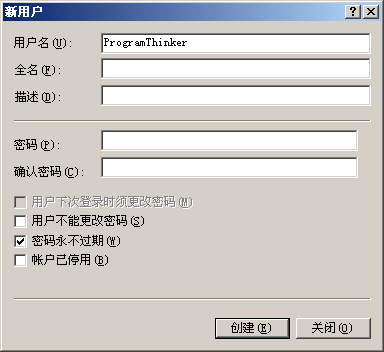
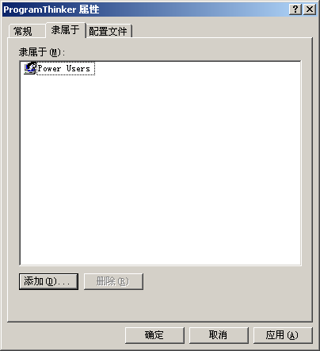
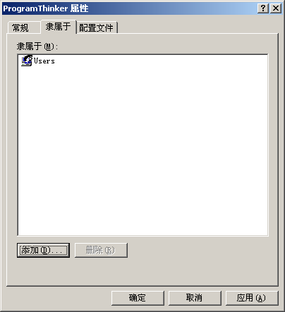
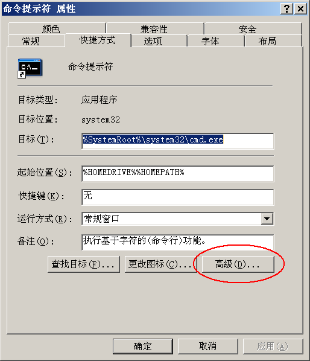

为啥俺把这个话题列在头一条？——因为这是个非常普遍、且远远没有得到重视的问题。根据俺的经验，如果你能够养成好习惯，【不】使用高权限用户（尤其是管理员）进行日常操作，就可以大大降低被黑的概率。下面，俺就来具体介绍一下。
考虑到本文是面向外行人士，先进行一下名词解释。
所谓的“用户权限”，通俗地说，就是某个用户的权力有多大。权力越大，能干的事情越多。
用户组，顾名思义，就是一组用户的集合。
在主流的操作系统中，“用户权限”通常是和“用户组”挂钩滴。针对不同的用户组，分配了不同的权限。
为了让用户省事儿，Windows 系统内置了若干用户组（比如：Users、Power Users、Guests、等）。这些内置的用户组，事先已经预定义好若干用户权限。
本文提及的【高权限用户】，主要是指 Windows 系统中 Administrators 组的用户或 Linux/Unix 系统中 root 组的用户。
另外，顺便消除一个误解。很多菜鸟以为：Windows 系统中，只有用户名为“Administrator”的用户才具有管理员权限。其实捏，任何一个用户，即使用户名不叫“Administrator”，只要是属于“Administrators 组”，也同样具有管理员权限。
菜鸟的例子就不提了，光说说俺接触过的很多程序员吧。这帮家伙在使用 Linux/Unix 系统进行开发时，都晓得应该用普通用户的帐号进行操作；当需要做某些高级权限的操作，再切换到管理员帐号（root 帐号）。但即便是这些开发人员，在自己的 Windows 系统中，却喜欢用管理员（Administrator）进行日常操作，实在是很讽刺。
如果连 IT 专业的开发人员都这样，那不太懂技术的菜鸟，就可想而知了。
如果你平时总是用管理员权限登录到系统并进行日常工作，那就意味着你所运行的每一个程序，同时也具有了管理员权限。要知道，管理员权限的权力是非常大滴——几乎可以干任何事情。
假设你有上述【坏】习惯。某天，你从网上下载了一个软件，且软件已经感染了病毒。那么，当你运行这个软件时，这个病毒就会被激活。更要命的是，它也同样具有【管理员权限】。也就是说，病毒获得了与杀毒软件平起平坐的地位。假如这个病毒的作者水平再高一些，甚至可以骗过杀毒软件或者直接把杀毒软件干掉。
除了病毒，木马也是一样。假设你上网的时候，一不留神访问了某个挂马的网站。一旦木马被激活，也同样是以【管理员权限】运行，危害同样也巨大。
考虑到 Windows 系统的用户占绝大多数，俺就光拿 Windows 系统来说事儿。希望 Linux 及 Mac OS 的 fans 不要见怪哦。
为了尽量少用高权限用户。你最好刚装好系统之后，单独创建一个非管理员用户。

你可以让该用户仅仅属于“Power Users 组”，如下图：

如果想更安全的话，可以只加入“Users 组”，今后，就主要通过这个用户进行日常的操作。如下图：

考虑到有些同学不了解这两个用户组，在权限方面与管理员有啥区别。俺简单列举一下。
相对于“Administrators 组”，“Power Users 组”缺少了如下几项权限（俺只列主要的）：
1. 不能添加、删除、禁用系统中的其它用户。
2. 不能修改其它用户的属性（包括口令、所属的用户组、等）
3. 不能安装/卸载硬件驱动程序。
4. 不能安装/卸载某些应用软件。
5. 不能查看系统的安全日志。
“Users 组”的权限比“Power Users 组”更小。除了“Power Users 组”做不到的事情，“Users 组”还【缺少】如下权限（俺只列主要的）：
1. 不能修改系统时间。
2. 不能修改某些系统目录（包括：系统盘的
3. 不能启动/停止某些系统服务。
4. 不能修改注册表
从上述对照，明显可知，“Users 组”的权限更小，使用起来更安全。比如说，即使你运行了一个带毒的程序，由于病毒和你一样，也仅有“Users 组”的权限。所以病毒也就无法修改/破坏重要的系统目录，掀不起太大风浪。
通常来说，越安全的措施，往往也意味着越麻烦。但是这些麻烦，都有相应的解决之道。
当你以普通用户身份登录后，可能由于某些原因，需要用管理员用户干点事情。但是你（可能是开了很多程序）又不想把当前用户注销。
俺的建议是：使用【快速用户切换】（洋文叫：Fast User Switching）功能来切换用户。此功能从 Windows XP 开始提供。简单地说，就是可以让几个不同的用户同时登录同一个系统，平滑地切换。有了此功能，这个麻烦就不明显啦。
如果你非常不幸，还在使用比较古老的 Windows 2000 系统；或者你使用的是 Windows 的服务版本（比如 Windows Server 2003）。在这些版本的 Windows 系统中，默认是没有“快速用户切换”功能滴。这可咋办捏？
俺的建议是：
可以在【不】注销当前用户的情况下，以另一个用户（比如管理员）启动某个需要更高权限的程序。为了说清楚，举例如下：
假设你当前处于一个普通用户的环境，但是想另外启动一个具有管理员权限的程序，比如说命令行程序（cmd.exe）。
1. 你先创建一个指向
2. 用鼠标选中该快捷方式，在快捷菜单（右键菜单）中，选择“属性”菜单项。出现如下对话框。

3. 在该对话框中，点“高级”按钮。出现如下对话框。把“以其他用户身份运行”选项打勾，即可。至此，快捷方式创建完毕。

4. 以后，如果你想在普通用户环境中，以管理员身份执行命令行，只需点击该快捷方式，就会弹出如下对话框。然后在该对话框中输入管理员的用户名和口令，就能以管理员的身份，把该命令行启动起来。

安装驱动总是需要【管理员权限】才行；另外，很多软件（比如 MS Office）在安装时，也要求用【管理员权限】进行。
俺的建议是：
在刚装好系统之后，先用管理员用户把上述这些软件/驱动程序都搞好。然后，就无需再用管理员用户了。毕竟你经常使用的软件相对固定，不可能三天两头安装软件或驱动（除非你是软/硬件发烧友）。即便偶尔需要重新装个软件或驱动，也可以用上述介绍的方式，【临时】切换到管理员权限。
如果你平时用的是“Users 组”而不是“Power Users 组”，那你连修改系统时间的权限也没有。
俺的建议是：
启用 Windows 系统自带的时间同步服务，让它帮你自动同步系统时间。
除了上述这几点，如果还有谁碰到其它的麻烦，也欢迎来信跟俺交流。俺会补充到本文中。本系列的下一个帖子，将会介绍攻击者是如何搞定你的口令/密码。
回到本系列的目录
★基本概念扫盲
考虑到本文是面向外行人士，先进行一下名词解释。
◇用户权限
所谓的“用户权限”，通俗地说，就是某个用户的权力有多大。权力越大，能干的事情越多。
◇用户组
用户组，顾名思义，就是一组用户的集合。
在主流的操作系统中，“用户权限”通常是和“用户组”挂钩滴。针对不同的用户组，分配了不同的权限。
为了让用户省事儿，Windows 系统内置了若干用户组（比如：Users、Power Users、Guests、等）。这些内置的用户组，事先已经预定义好若干用户权限。
◇高权限用户
本文提及的【高权限用户】，主要是指 Windows 系统中 Administrators 组的用户或 Linux/Unix 系统中 root 组的用户。
另外，顺便消除一个误解。很多菜鸟以为：Windows 系统中，只有用户名为“Administrator”的用户才具有管理员权限。其实捏，任何一个用户，即使用户名不叫“Administrator”，只要是属于“Administrators 组”，也同样具有管理员权限。
★反面教材
菜鸟的例子就不提了，光说说俺接触过的很多程序员吧。这帮家伙在使用 Linux/Unix 系统进行开发时，都晓得应该用普通用户的帐号进行操作；当需要做某些高级权限的操作，再切换到管理员帐号（root 帐号）。但即便是这些开发人员，在自己的 Windows 系统中，却喜欢用管理员（Administrator）进行日常操作，实在是很讽刺。
如果连 IT 专业的开发人员都这样，那不太懂技术的菜鸟，就可想而知了。
★危害性
如果你平时总是用管理员权限登录到系统并进行日常工作，那就意味着你所运行的每一个程序，同时也具有了管理员权限。要知道，管理员权限的权力是非常大滴——几乎可以干任何事情。
假设你有上述【坏】习惯。某天，你从网上下载了一个软件，且软件已经感染了病毒。那么，当你运行这个软件时，这个病毒就会被激活。更要命的是，它也同样具有【管理员权限】。也就是说，病毒获得了与杀毒软件平起平坐的地位。假如这个病毒的作者水平再高一些，甚至可以骗过杀毒软件或者直接把杀毒软件干掉。
除了病毒，木马也是一样。假设你上网的时候，一不留神访问了某个挂马的网站。一旦木马被激活，也同样是以【管理员权限】运行，危害同样也巨大。
★你该如何做？
考虑到 Windows 系统的用户占绝大多数，俺就光拿 Windows 系统来说事儿。希望 Linux 及 Mac OS 的 fans 不要见怪哦。
为了尽量少用高权限用户。你最好刚装好系统之后，单独创建一个非管理员用户。
你可以让该用户仅仅属于“Power Users 组”，如下图：
如果想更安全的话，可以只加入“Users 组”，今后，就主要通过这个用户进行日常的操作。如下图：
考虑到有些同学不了解这两个用户组，在权限方面与管理员有啥区别。俺简单列举一下。
◇“Power Users组”与“Administrators 组”的差别
相对于“Administrators 组”，“Power Users 组”缺少了如下几项权限（俺只列主要的）：
1. 不能添加、删除、禁用系统中的其它用户。
2. 不能修改其它用户的属性（包括口令、所属的用户组、等）
3. 不能安装/卸载硬件驱动程序。
4. 不能安装/卸载某些应用软件。
5. 不能查看系统的安全日志。
◇“Users 组”与“Administrators 组”的差别
“Users 组”的权限比“Power Users 组”更小。除了“Power Users 组”做不到的事情，“Users 组”还【缺少】如下权限（俺只列主要的）：
1. 不能修改系统时间。
2. 不能修改某些系统目录（包括：系统盘的
\WINDOWS 目录、系统盘的 \WINDOWS\SYSTEM32 目录、系统盘的 \Program Files 目录）。3. 不能启动/停止某些系统服务。
4. 不能修改注册表
HKEY_LOCAL_MECHINE 下的所有键值。从上述对照，明显可知，“Users 组”的权限更小，使用起来更安全。比如说，即使你运行了一个带毒的程序，由于病毒和你一样，也仅有“Users 组”的权限。所以病毒也就无法修改/破坏重要的系统目录，掀不起太大风浪。
★可能的麻烦
通常来说，越安全的措施，往往也意味着越麻烦。但是这些麻烦，都有相应的解决之道。
◇切换用户的麻烦
当你以普通用户身份登录后，可能由于某些原因，需要用管理员用户干点事情。但是你（可能是开了很多程序）又不想把当前用户注销。
俺的建议是：使用【快速用户切换】（洋文叫：Fast User Switching）功能来切换用户。此功能从 Windows XP 开始提供。简单地说，就是可以让几个不同的用户同时登录同一个系统，平滑地切换。有了此功能，这个麻烦就不明显啦。
如果你非常不幸，还在使用比较古老的 Windows 2000 系统；或者你使用的是 Windows 的服务版本（比如 Windows Server 2003）。在这些版本的 Windows 系统中，默认是没有“快速用户切换”功能滴。这可咋办捏？
俺的建议是：
可以在【不】注销当前用户的情况下，以另一个用户（比如管理员）启动某个需要更高权限的程序。为了说清楚，举例如下：
假设你当前处于一个普通用户的环境，但是想另外启动一个具有管理员权限的程序，比如说命令行程序（cmd.exe）。
1. 你先创建一个指向
cmd.exe 的快捷方式。（该咋样创建快捷方式，就不用俺来教了吧？）2. 用鼠标选中该快捷方式，在快捷菜单（右键菜单）中，选择“属性”菜单项。出现如下对话框。
3. 在该对话框中，点“高级”按钮。出现如下对话框。把“以其他用户身份运行”选项打勾，即可。至此，快捷方式创建完毕。
4. 以后，如果你想在普通用户环境中，以管理员身份执行命令行，只需点击该快捷方式，就会弹出如下对话框。然后在该对话框中输入管理员的用户名和口令，就能以管理员的身份，把该命令行启动起来。
◇安装软件/驱动的麻烦
安装驱动总是需要【管理员权限】才行；另外，很多软件（比如 MS Office）在安装时，也要求用【管理员权限】进行。
俺的建议是：
在刚装好系统之后，先用管理员用户把上述这些软件/驱动程序都搞好。然后，就无需再用管理员用户了。毕竟你经常使用的软件相对固定，不可能三天两头安装软件或驱动（除非你是软/硬件发烧友）。即便偶尔需要重新装个软件或驱动，也可以用上述介绍的方式，【临时】切换到管理员权限。
◇修改系统时间的麻烦
如果你平时用的是“Users 组”而不是“Power Users 组”，那你连修改系统时间的权限也没有。
俺的建议是：
启用 Windows 系统自带的时间同步服务，让它帮你自动同步系统时间。
除了上述这几点，如果还有谁碰到其它的麻烦，也欢迎来信跟俺交流。俺会补充到本文中。本系列的下一个帖子，将会介绍攻击者是如何搞定你的口令/密码。
回到本系列的目录
版权声明
本博客所有的原创文章，作者皆保留版权。转载必须包含本声明，保持本文完整，并以超链接形式注明作者编程随想和本文原始地址：
https://program-think.blogspot.com/2010/06/howto-prevent-hacker-attack-1.html
本博客所有的原创文章，作者皆保留版权。转载必须包含本声明，保持本文完整，并以超链接形式注明作者编程随想和本文原始地址：
https://program-think.blogspot.com/2010/06/howto-prevent-hacker-attack-1.html